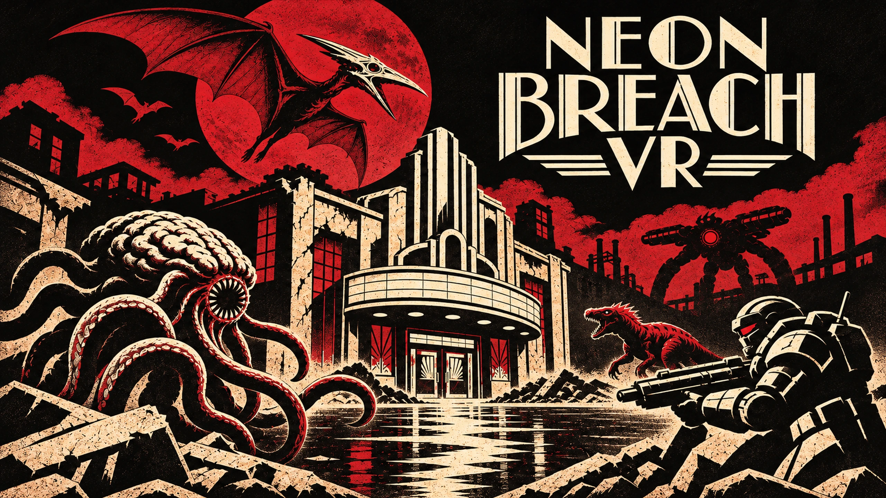

Make your point.
Then reload.
Pistol. Shotgun. Rotary gun. Rockets. Energy weapons that freeze, shrink or burn. Choose your tool, then decide which one deserves the next upgrade.

SINGLE-PLAYER / RETRO SCI-FI ACTION
One frozen capsule. An alien occupation. A very personal response.
Step into a dark, 2.5D-inspired shooter with illustrated enemies, detailed 3D weapons and environments that react to your firepower.
TRANSMISSIONS FROM THE FRONT
Captured on Meta Quest 3.
Actual gameplay. Illustrated cover above.
Gameplay trailer · 1:03 · Recorded on Meta Quest 3 · Soundtrack: Pressure Lock
Download trailer
FIELD GUIDE / SURVIVE WITH STYLE
Pistol. Shotgun. Rotary gun. Rockets. Energy weapons that freeze, shrink or burn. Choose your tool, then decide which one deserves the next upgrade.
Shatter glass, crack screens and leave wrecked cars behind. Explosive and chemical barrels can turn a bad encounter around.
Armed squads, charging beasts, flying threats and bosses. Some enemies keep fighting after being knocked down. Clear the threat, find the secrets and free captives.
YOUR INVASION / YOUR SETUP
Seated or standing. Adjustable height and HUD position. Choose your dominant hand, turning mode, graphics profile and audio levels.
Tracked controllers required. Artificial locomotion. English text and dialogue.
BEFORE YOU DROP IN
Neon Breach VR is designed and tested on Meta Quest 3. Support for other headsets has not been announced.
No. This is a single-player campaign with local saves and completion records.
The current game's core campaign works offline and has no developer account system. The headset platform and store have their own services and requirements.
A release date, price and store link have not been announced. Follow this page for confirmed release details.
Stylized violence, blood, dismemberment, mild language and suggestive adult character designs. The store's final age rating will be provided through its rating process.
ANWAR STUDIO OFFICIAL